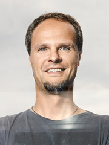
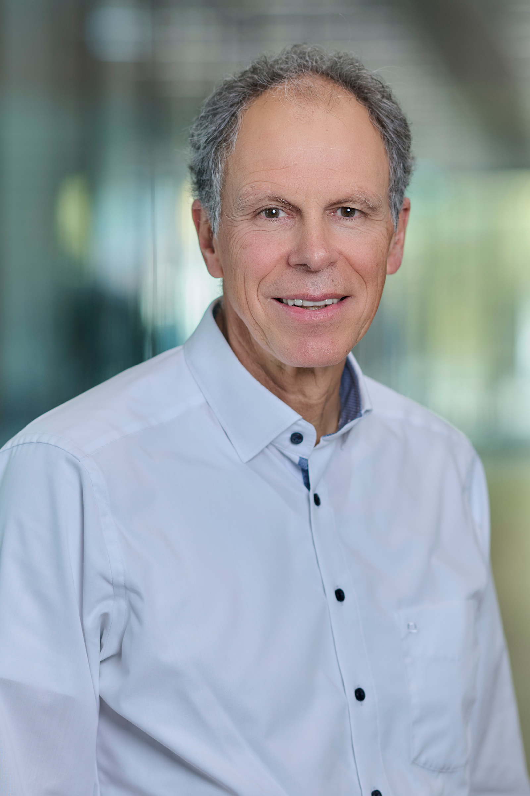

Principal Investigators

Reinhold G. Erben
Ludwig Boltzmann Institute of Osteology, Vienna
Axel K. Walch
Helmholtz Center Munich

Jan Baumbach
University of Hamburg

Philippe Zysset
University of Bern
Peter Varga
AO Research Institute Davos